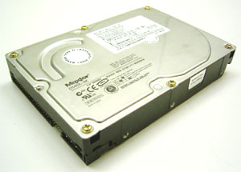

En ocasiones el Norton Ghost falla inesperadamente al intentar clonar un sistema GNU/Linux a un disco de mayor tamańo.
Cuando esto sucede, o bien cuando simplemente no queremos recurrir a soluciones propietarias, es posible utilizar el método descrito a continuación.

Para seguir este método , es necesario utilizar una version Live de GNU/Linux. La más popular de ellas es Knoppix, la cual esta disponible tanto en imágenes para CD-ROM como para DVD.
Puedes utilizar cualquier de los sitios que aparecen en este enlace para descargar la imagen:
http://www.knopper.net/knoppix-mirrors/
A grandes rasgos, el proceso que seguiremos es este:
- Pincharemos los dos discos en el sistema y lo arrancaremos con el Live-CD/DVD
- Volcaremos el contenido del primer disco en el segundo.
- Recreamos la tabla de particiones
- Expandimos el filesytem para ajustarse a la nueva particion
- Recreamos el area de swap (en caso de que sea necesario)
Prerequisitos
En este ejemplo, vamos a suponer que las particiones de datos de nuestro sistema utilizan el sistema de ficheros ext2/ext3 y discos duros SCSI.
Por otro lado, la partición que deseamos expandir, ha de ser la última con datos del disco duro. Si la última particiaon no tiene datos, como la de swap, entonces la podemos eliminar sin más, ya que la podemos volver a crear al final del disco duro sin problemas.
Todo esto, se basa en el hecho de que es posible eliminar una partición y volver a crearla sin perder los datos que contiene. Para ello, el único requisito es que la nueva partición empiece en el mismo punto que la anterior, haciendo que el final esté más lejos (aprovechando el espacio adicional del nuevo disco.)
Sigue los siguientes pasos:
- Conecta el nuevo disco duro al sistema. Quizás necesites modificar el identificador SCSI para evitar conflictos con el disco duro existente.
- Arranca el sistema con el Live-CD/DVD
- Abre un terminal y conviertete en root ( con el comando
susin password en Knoppix) - Ahora necesitamos saber los ficheros de dispositivo asociados a cada disco duro (
/dev/sday/dev/sdbprobablemente si son SCSI). Puedes utilizar el comandosfdisk -spara ello. - Suponiendo que tienes el disco viejo en
/dev/sday el nuevo en/dev/sdb, utiliza el commandoddpara volcar el contenido del disco viejo en el nuevo:
Ejemplo:
dd if=/dev/sda of=/dev/sdb
Truco: Comando dd en modo “verbose”
El comando dd no muestra información sobre el proceso de volcado hasta que ha finalizado. Dado que el proceso de volcado de un disco a otro puede llevar un tiempo considerable (del orden de horas a veces) sería muy interesante poder ver información relativa a la cantidad de datos volcados.
Para ello podemos recurrir a este truco que consiste en eviarle al proceso dd la seńal USR1.
Esto provoca que el comando dd saque por pantalla la cantidad de bytes transmitidos hasta el momento.
De esta manera, podermos ir viendo la progresión del volcado.
kill USR1 `ps -C dd -o pid=`
- Cuando el comando
ddfinaliza, hemos de recrear la tabla de particiones del nuevo disco duro. Esto nos permitirá ampliar el filesystem de la partición primaria de nuestro nuevo sistema.
Para reparticionar el disco duro nuevo, utilizaremos fdisk.
fisk /dev/sdb
Utilizando los comandos que nos proporciona la consola de fdisk, es sumamente sencillo recrear la partición de root.
Supongamos que que disponemos de la partición de /boot (en /dev/sdb1) la raiz del sistema (en /dev/sdb2) y una partición de swap (en /dev/sdb3). En este caso el procedimiento seria este:
Eliminaremos las particiones de swap y la raiz del sistema (/dev/sdb3 y /dev/sdb2) utilizando para ello la opción d de la consola de fdisk.
Luego recrearemos la partición de root (opciones n y p de la consola de fdisk), teniendo especial precaución en que el inicio de la misma sea el mismo que antes de borrarla (INTRO opcion por defecto). El tamańo de la misma dependerá del tamańo de nuestro disco duro, teniendo en cuenta que hemos de dejar espacio suficiente al final para el área de swap.
Finalmente, recreamos la partición de swap (que puede empezar a continuación de la partición de root).
Recuerda cambiar el tipo de partición para idendificar esta partición como area de swap (utiliza el comando t de fdisk y el tipo 82 para ello).
Abandona la consola de fdisk utilizando la opción w para que los cambios que has realizado tengan efecto.
Ahora llega el momento de expander el filesystem de la partición raiz para que se ajueste al tamańo de la nueva partición.
resize2fs p /dev/sdb2
Finalmente, creamos y activamos el nuevo area de swap
mkswap /dev/sdb3
swapon /dev/sdb3
Esto es todo. Reinicia el sistema con el nuevo disco duro.
Una vez arancado, puedes chequear el espacio disponible en la nueva partición raiz con el comando:
df -h